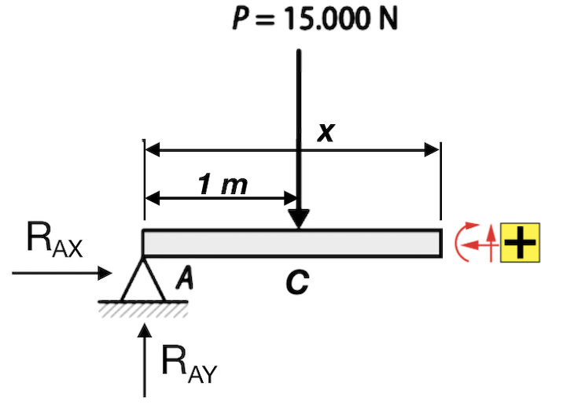
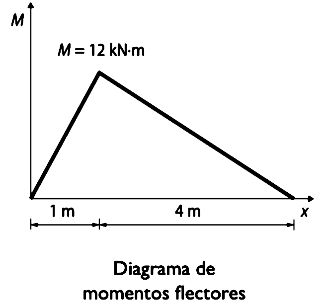

Enunciado
Elabora los diagramas de momentos flectores y de esfuerzos cortantes correspondientes a la viga de la figura:

Elabora los diagramas de momentos flectores y de esfuerzos cortantes correspondientes a la viga de la figura:
Determinamos las reacciones según los tipos de apoyos que vemos en la figura:

Aplicando las condiciones de que no haya movimiento en horizontal ni en vertical, ni que haya giro, obtenemos las tres ecuaciones necesarias para calcular las reacciones RAX, RAY y RBY:
Equilibrio de fuerzas en el eje horizontal \(\sum_{}^{}F_{x}=0\):
\(R_{AX}=0\)
Equilibrio de fuerzas en el eje vertical \(\sum_{}^{}F_{y}=0\). Recuerda que el criterio es considerar las fuerzas positivas si van hacia arriba y negativas si van hacia abajo:
\(R_{AY}-P+R_{BY}=0\)
Equilibrio de momentos de fuerzas, referido a una sección cualquiera de la viga \(\sum_{}^{}M_{A}=0\).
Es recomendable seleccionar la sección que más incógnitas elimine. En este caso es la sección A, ya que hay dos fuerzas aplicadas en este punto que, por lo tanto, no generan momento en él.
Recuerda que el criterio de signos es momentos positivos en sentido antihorario y negativos en sentido horario:
\(-P·1m+R_{BY}·(4+1)m=0\)
Sustituyendo los datos del problema, nos queda este sistema de ecuaciones:
\(\left \{\begin{array}{r}R_{AX}=0\\ R_{AY}-15000+R_{BY}=0\\ -15000+5R_{BY}=0 \end{array} \right. \)
Resolviendo el sistema, obtenemos los valores de las reacciones:
\begin{array}{c}
R_{AX}=0 \ N\\
R_{AY}=12000 \ N = 12 \ kN\\
R_{BY}=3000 \ N = 3 \ kN
\end{array}
El procedimiento consiste en partir la viga en tramos, separados por cambios de carga o apoyos. Es decir, recorriendo la viga de derecha a izquierda, se definirá un tramo cuando aparezca una nueva carga o un apoyo.
Siguiendo este criterio, esta viga se divide en dos tramos, A-C y C-B, definidos por la aplicación de la carga puntual "P" en el punto C. Por tanto, las leyes de esfuerzos deberemos calcularlas en estos dos tramos.
Nos encontramos con el siguiente trozo de viga (se han indicado en rojo los sentidos positivos de los esfuerzos):

Esfuerzo axil:
El esfuerzo axil es nulo, ya que no hay fuerzas en dirección paralela al eje de la viga:
\(N_{A-C}(x)=R_{AX}=0 \ N\)
Esfuerzo cortante:
La componente vertical RAY de la reacción en el apoyo A es la única fuerza en dirección perpendicular a la viga que genera cortante. Como va hacia arriba, se cuenta como positiva:
\(V_{A-C}(x)=R_{AY}=12 \ kN\)
Momento flector:
El momento flector es generado por la reacción RAY, cuya distancia a la sección x es la propia distancia x. Genera un momento en sentido horario, por lo que lo consideramos positivo.
\(M_{A-C}(x)=R_{AY}·x=12x \ kN·m\)
Nos encontramos con el siguiente trozo de viga:

Esfuerzo axil:
El esfuerzo axil es nulo, ya que no hay fuerzas en dirección paralela al eje de la viga:
\(N_{C-B}(x)=R_{AX}=0 \ N\)
Esfuerzo cortante:
Al cortante generado por la reacción RAY, se le añade la fuerza aplicada de 15 kN, que genera un cortante negativo.
\(V_{C-B}(x)=R_{AY}-15=12-15=-3 \ kN\)
Momento flector:
Al momento flector generado por la reacción RAY se suma el producido por la fuerza aplicada de 15 kN, cuya distancia a la sección analizada es (x-1). Esta fuerza genera un momento en sentido antihorario y, por tanto, negativo.
\(M_{C-B}(x)=R_{AY}·x-15·(x-1)=12x-15x+15=15-3x \ kN·m\)
Ya solo nos queda dibujar las funciones que hemos obtenido en el paso anterior, siendo x el eje horizontal y estando el origen de coordenadas en el apoyo A.
El diagrama de esfuerzos axiles no tiene sentido dibujarlo, ya que N(x) = 0 para toda la viga. Dibujaremos, por tanto, los diagramas de esfuerzos cortantes y de momentos flectores:


1 - Elabora los diagramas de momentos flectores y de esfuerzos cortantes correspondientes a la viga de la figura:

Solución (partiendo del punto A):
Momentos flectores:
• Para 0 m ≤ x ≤ 2 m → Mx1 = -5x (kN·m)
• Para 2 m ≤ x ≤ 9 m → Mx2 = -10 (kN·m)
• Para 9 m ≤ x ≤ 10 m → Mx3 = 10x-100 (kN·m)
Esfuerzos cortantes:
• Para 0m ≤ x ≤ 2m → Fx1 = -5 kN
• Para 2 m ≤ x ≤ 9 m → Fx2 = 0 kN
• Para 9m ≤ x ≤ 10 m → Fx3 = 10 kN
2 (PAU) - Se requiere analizar la viga presentada en la figura adjunta:
 Considerando los datos proporcionados, calcular:
Considerando los datos proporcionados, calcular:
3 (PAU) - En la siguiente figura se representan las cargas que debe soportar una viga y los apoyos que tiene en la estructura de la que forma parte.
 Considerando los datos proporcionados, analizar la estructura calculando:
Considerando los datos proporcionados, analizar la estructura calculando:
4 (PAU) - Se requiere analizar una viga de 5 m con su extremo derecho (punto B) empotrado en una pared. Sobre el extremo izquierdo (punto A) actúa una fuerza peso de 3 kN, y a 2 m del empotramiento se localiza otra fuerza peso de 2 kN. Se pide:
5 (PAU) - Para evitar inundaciones con las crecidas, se ha canalizado el río Guadalquivir a su paso por Sevilla en varios tramos, y la expansión de la ciudad hace necesario construir un nuevo puente sobre el canal de 46 m de ancho. Se estudia la opción de construir el puente con vigas de hormigón armado tipo Doble T como las de la figura, que pueden alcanzar hasta los 53 m de largo.

Tras el estudio del terreno, se decide usar una viga de 50 m de largo apoyada en un extremo en un soporte fijo y el otro en un apoyo móvil o de rodillo. El puente debe soportar el paso de vehículos pesados, por lo que se diseñará para una masa máxima de vehículos de 65 toneladas. La masa de la viga es 110,5 toneladas. Colabora en el diseño del puente resolviendo las siguientes cuestiones.
(NOTA: este ejercicio está planteado para considerar el peso de la viga como una carga puntual aplicada en su centro de masas, no como una distribución continua de carga, ya que en PAU solo se pedirán ejercicios con cargas puntuales)
6 (PAU) - El estudio de arquitectura Andalusí está desarrollando el proyecto de un bloque de viviendas en primera línea de playa en Almería. Una de las viviendas del ático dispone de una terraza voladiza de 4 m de longitud que sobresale desde la fachada principal. La terraza se modela como una viga con un extremo empotrado en la fachada y el otro extremo en voladizo.
Teniendo en cuenta el tamaño total de la terraza, se estima que durante una fiesta puede albergar un grupo de personas con un peso total de 8,5 kN. El peso de la losa de hormigón de la terraza es de 16,8 kN.
Obra publicada con Licencia Creative Commons Reconocimiento No comercial Compartir igual 4.0